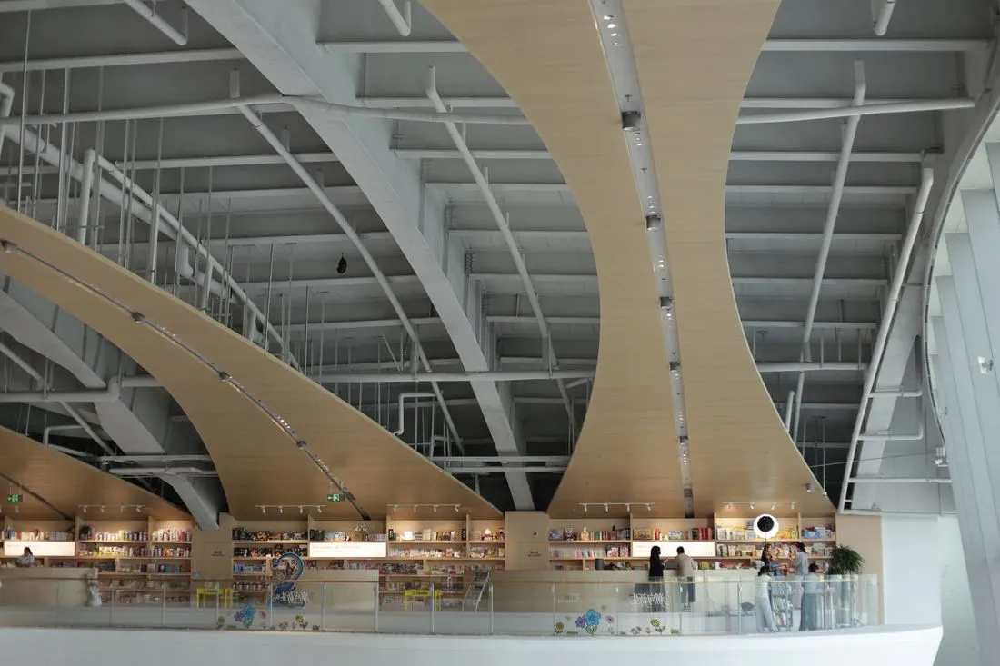

- Location
- Ullapool, Highland
- Year
- 2023
- Floor area
- 1,450 m²
- Client
- Highland Council
- Status
- Completed
- Type
- Cultural
Materials
- Cross-laminated timber
- Brick
- Birch plywood
- more visitors
- 3×
- archive items
- 40,000
- build cost
- £3,400/m²
Brief
Combine a lending library, the regional archive and a community hall on a tight harbourside site, within a modest public budget.
Approach
Heavy archive rooms sit low and quiet in brick. Above them, a light timber reading room cantilevers toward the water, with a stair that doubles as an amphitheatre for talks.
Outcome
Visits are up threefold, and the archive now holds 40,000 items at stable temperature without mechanical cooling.